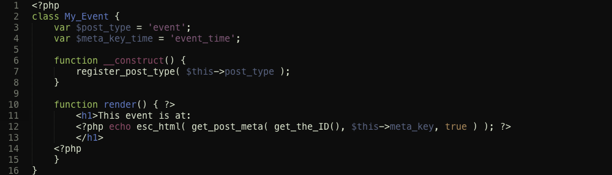
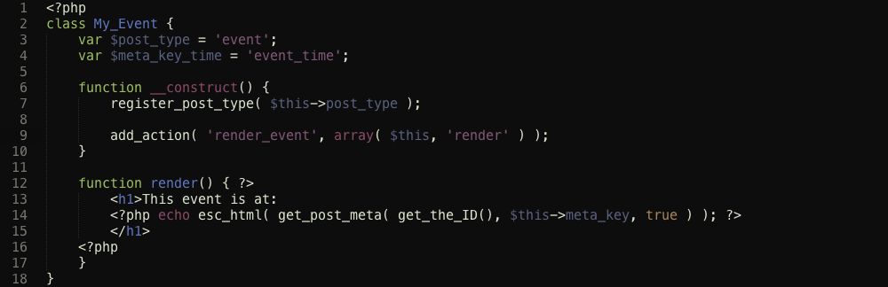

OOP for Theme Development
Presented by Ben Doherty @ Oomph, Inc.
Email: ben@oomphinc.com
Skype: bdoherty.oomphinc
Follow along with me
- These slides are written with Impress.js
You can get 'em here:
- http://bendoh.github.com/WordCamp/wcpvd-2012-oop/
- Or if that's too much typing...
- http://bit.ly/Vfy0TY
About Oomph
- Web Development House
- Specialize in WordPress and Drupal
- WordPress.com VIP Technical Partner
Located right here in sunny Providence, Rhode Island!
Ben Doherty
- WordPress enthusiast
- Plugin Developer
- Themer
- Tech Director
- Total Nerd
Why OOP?
-
Modularity
Chunks of functionality become distinct pieces
-
Re-usability
Just re-name a class (and maybe actions / filters) and it's ready for another theme.
-
Encapsulation
All related code is tucked away in a single place.
Why OOP in WordPress?
1. Namespacing
- You should be namespacing all your theme-defined functions anyway
- If functions are defined in a class, only the class needs to be namespaced
2. Code Re-Use
- Code wrapped up in a class can easily be migrated to another theme
- Just rename the class (and any references) and you're good to go!
3. Consistency
- Objects can follow similar patterns
- Predictable patterns = easy-to-read code
4. Boilerplate-Ready
- Create easily-populated code templates
- Templates can represent various base functions to be filled in
Coding Principals
KISS
- Keep
- It
- Simple
- Stupid
DRY
- Don't
- Repeat
- Yourself
Do-Not-Depend
- Dependencies make migrating code more difficult.
- Also makes for more fragile code.
Newer Isn't Always Better
// These two features are available as of PHP 5.3,
// but WordPress can run on PHP 5.2.4
// Cool new operator... Short-circuit ternary?
$the_value = $_POST['value'] ?: "default value";
// Anonymous functions.
add_filter( 'the_content', function( $content ) {
return $content . " filtered!";
});
I don't know it all!
Code Organization
theme/functions.php- Top-level functions available for all theme files
theme/functions/- Additional function groups and code modules
theme/functions/template.php- Template tags. Functions that emit markup.
theme/functions/class-*.php-
Class files. Lower-case, prefixed with class.
Example:theme/functions/class-my-sweet-post.php
Workflow
In your wp-config.php:
define( 'WP_DEBUG', true );- Turn on WordPress debugging. This will turn on various PHP Warnings and Errors.
define( 'WP_DEBUG_DISPLAY', false );- Don't dump debug messages to the screen.
define( 'WP_DEBUG_LOG', true );- Log to
wp-content/debug.log - Watch
wp-content/debug.loglike a HAWK! PHP Warnings are a bad thing and can indicate bugs in your code. - Plugins: Debug Bar, Debug Bar Extender
Now for some code
Namespacing

Code Re-Use
Instantiation
Singletons
- A class which should only be instantiated ONCE.
- Not intended to be subclassed.
- Can be implemented a variety of ways.
Singleton: Static Methods
class My_Singleton {
static function init() {
add_action( 'save_post', array( get_class(), 'action_save_post' ) );
}
static function action_save_post( $post_id ) {
...
}
}
My_Singleton::init();
- Not truly a singleton, as it doesn't need to be instantiated. Provides similar behavior.
- No self-reference (
$this); - Not much different from just writing a bunch of functions.
Auto-Enforced Singleton
class My_Singleton {
private function __construct() {
add_action( 'save_post', array( $this, 'action_save_post' ) );
}
private function __clone() { } // Disallow clone() of object
private static $instance = false;
public static function get_instance() {
if( !$self::instance )
$self::instance = new My_Singleton;
return $self::instance;
}
static function action_save_post( $post_id ) {
...
}
}
My_Singleton::get_instance();
- Very robust.
- Requires a lot of typing. Must repeat this construct for every singleton class.
- Can not be inherited / extended.
Singleton Base Class
class Singleton {
protected static $instances;
protected function __construct() { }
final private function __clone() { }
public static function get_instance() {
$class = get_called_class();
if (!isset(self::$instances[$class])) {
self::$instances[$class] = new $class;
}
return self::$instances[$class];
}
}
Singleton Base Class in Action
class My_Singleton extends Singleton {
function My_Singleton() {
add_action( 'save_post', array( $this, 'action_save_post' ) );
}
function action_save_post( $post_id ) {
...
}
}
My_Singleton::get_instance();
- Robust. Guarantees singleton.
- Re-useable base class simplifies sub-classes.
- Violates DND. Re-using requires bringing base class along.
- Depends on PHP 5.3 (
get_called_class())
Singleton Factory
function my_singleton_factory( $class ) {
static $instances;
if( !isset( $instances[$class] ) )
$instances[$class] = new $class;
return $instances[$class];
}
- Dead-simple.
- Simple theme-level function to access singleton.
- In no way enforces a class is instantiated once.
Singleton Factory with Placeholder
/*
* Placeholder class that simulates a real object, but does nothing.
* Code depending on a missing class won't cause fatal errors,
* Messages will get printed to error log when accessed
*/
class My_Placeholder {
private $placeholder_class = '';
private $reason = '';
function __construct( $class, $reason ) {
$this->placeholder_class = $class;
$this->reason = $reason;
error_log( "Attempted to create non-existent class singleton in class '$this->placeholder_class' (reason=$reason)" );
}
function __call( $method, $args ) {
error_log( "Attempted to call method '$method' on missing class '$this->placeholder_class'; args", $args );
return null;
}
function __get( $name ) {
error_log( "Attempted to access object property '$name' on missing class '$this->placeholder_class'" );
return null;
}
function __set( $name, $value ) {
error_log( "Attempted to set object property '$name' to '$value' on missing class '$this->placeholder_class'" );
}
}
Singleton Factory with Placeholder (Continued)
function my_singleton_factory( $class ) {
static $instances;
if( !class_exists( $class ) )
return new My_Placeholder( $class, "Class does not exist" );
if( !isset( $instances[$class] ) )
$instances[$class] = new $class;
return $instances[$class];
}
- Theme-level function to access singleton.
- Robust: Provides a fallback in case a class doesn't exist.
- If a class doesn't exist, notices will be posted to the error log.
- Much more complex.
- In no way enforces a class is only instantiated once.
- Encourages direct access to singletons
Where does it go?
Classes should ALWAYS be put in their own class file
UNLESS the classes are very tightly related and co-dependant
Include class in functions.php, instantiate separately:
include( __DIR__ . '/functions/class-my-sweet-post.php' );
new My_Sweet_Post;My_Sweet_Post::get_instance();my_singleton( 'My_Sweet_Post' );- Instantiating in
functions.phpgives you more control over whether you want the featured enabled.
Object Heirarchy
Wide vs. Deep Object Graphs
Deep Object Graph
Deep Object Graph: Pros and Cons
- Allows for creating common code very easily
- Creates a ton of dependencies
- Almost always overkill for WordPress themes
Shallow Object Graph
Shallow Object Graph: Pros and Cons
- Much simpler.
- Fewer dependencies
- Harder to create and use common code.
Object Communication
Updated Sweet Post Meta Box
Get Sweetness in Theme
- Remove dependency by using filter.
- No problem if filter isn't defined.
- Opportunity to provide a default value.
- Opportunity for other code to override this meta key.
Render Output — Naive
functions/class-my-event.php

single-event.php
Render Output with Actions!
functions/class-my-event.php

single-event.php
Actions + Filters Remove Dependencies
- Filters let you hook into code and generate / modify values
- Actions let you perform tasks such as rendering or setup
- And the dependencies are gone!
Super Class: Widget
My_Widget_Base Class
- Provide reasonable defaults for a variety of settings.
- Specify options, validators, patterns and defaults using an
$optionsstructure - Allows subclasses to hide / show their display in logic
Wrap-Up
KISS
DRY
Singletons : So many ways!
Short and Stout Object Graphs
Communicate via Actions and Filters
Keep Dependencies to a Minimum